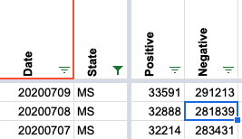
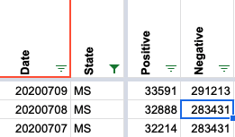

[MS] Negatives dropped on 7/8
State or US: MS
Describe the problem MS did not provide updated total testing numbers between 7/6 and 7/8. Because we subtract total tests from confirmed cases to yield negatives, negatives needed to be carried over to avoid going down. This happened on 7/7, but on 7/8 the negatives number was recalculated, resulting in an apparent decline in total tests on the web site. There was no public note to explain the decrease and it wasn’t mentioned in the DE conversation for MS that day, so I assume it was unintentional.
(This was reported to us via email.)
MattHilliard added the label Data quality on July 17, 2020 at 3:58 pm
MattHilliard closed the issue on July 17, 2020 at 3:59 pm
Before: 
After: 